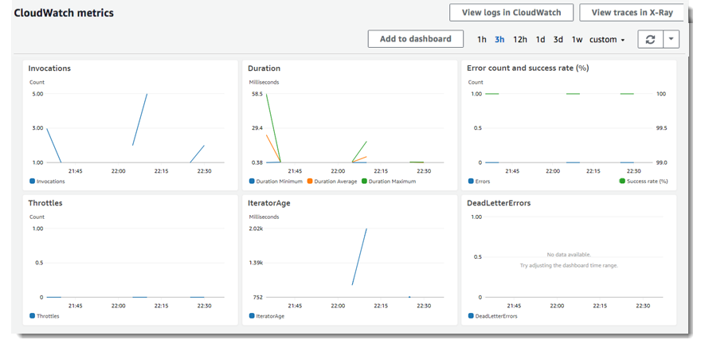

Create a Lambda function with the console
In the following getting started exercises, you create Lambda functions using the console.
In the first exercise, you create a function and use the default code that Lambda creates. The Lambda console provides a code editor for non-compiled languages that lets you modify and test code quickly.
In the next exercise, you create a function defined as a container image. First, create a container image for your function code, and then use the Lambda console to create a function from the container image.
Topics
Create a Lambda function with default function code
In this getting started exercise, you create a Node.js Lambda function using the Lambda console. Lambda automatically creates default code for the function. Next, you manually invoke the Lambda function using sample event data. Lambda runs the function and returns results. You then verify the results, including the logs that your Lambda function created and various Amazon CloudWatch metrics.
To create a Lambda function with the console
-
Open the Functions page
on the Lambda console. -
Choose Create function.
-
Under Basic information, do the following:
-
For Function name, enter
my-function. -
For Runtime, confirm that Node.js 14.x is selected.
-
-
Choose Create function.
Lambda creates a Node.js function and an execution role that grants the function permission to upload logs. The Lambda function assumes the execution role when you invoke your function, and uses the execution role to create credentials for the AWS SDK and to read data from event sources.
Use the designer
The Designer shows an overview of your function and its upstream and downstream resources. You can use it to configure triggers, layers, and destinations.

Choose my-function in the designer to return to the function's code and configuration. For scripting languages, Lambda includes sample code that returns a success response. You can edit your function code with the embedded AWS Cloud9 editor as long as your source code doesn't exceed the 3 MB limit.
Invoke the Lambda function
Invoke your Lambda function using the sample event data provided in the console.
To invoke a function
-
In the upper right corner, choose Test.
-
In the Configure test event dialog box, choose Create new test event. In Event template, leave the default Hello World option. Enter an Event name and note the following sample event template:
{ "key1": "value1", "key2": "value2", "key3": "value3" }You can change keys and values in the sample JSON, but don't change the event structure. If you do change any keys and values, you must update the sample code accordingly.
-
Choose Create, and then choose Test. Each user can create up to 10 test events per function. Those test events are not available to other users.
Lambda runs your function on your behalf. The function handler receives and then processes the sample event.
-
Upon successful completion, view the results in the console.
-
The Execution result section (below the Test button) shows the execution status as succeeded. To view the function execution results, expand Details. Note that the logs link opens the Log groups page in the CloudWatch console.
-
The Summary section shows the key information reported in the Log output section (the REPORT line in the execution log).
-
The Log output section shows the log that Lambda generates for each invocation. The function writes these logs to CloudWatch. The Lambda console shows these logs for your convenience. Choose Click here to add logs to the CloudWatch log group and open the Log groups page in the CloudWatch console.
-
-
Run the function (choose Test) a few more times to gather some metrics that you can view in the next step.
-
Near the top of the page, choose the Monitoring tab. This page shows graphs for the metrics that Lambda sends to CloudWatch.
For more information on these graphs, see Monitoring functions in the AWS Lambda console.
Clean up
If you are done working with the example function, delete it. You can also delete the log group that stores the function's logs, and the execution role that the console created.
To delete a Lambda function
-
Open the Functions page
on the Lambda console. -
Choose a function.
-
Choose Actions, Delete.
-
In the Delete function dialog box, choose Delete.
To delete the log group
-
Open the Log groups page
of the CloudWatch console. -
Select the function's log group (
/aws/lambda/my-function). -
Choose Actions, Delete log group(s).
-
In the Delete log group(s) dialog box, choose Delete.
To delete the execution role
-
Open the Roles page
of the AWS Identity and Access Management (IAM) console. -
Select the function's role (
my-function-role-).31exxmpl -
Choose Delete role.
-
In the Delete role dialog box, choose Yes, delete.
You can automate the creation and cleanup of functions, log groups, and roles with AWS CloudFormation and the AWS Command Line Interface (AWS CLI). For fully functional sample applications, see Lambda sample applications.
Create a function defined as a container image
In this getting started exercise, you use the Docker CLI to create a container image and then use the Lambda console to create a function from the container image.
Topics
Prerequisites
To complete the following steps, you need a command line terminal or shell to run commands. Commands and the expected output are listed in separate blocks:
this is a commandYou should see the following output:
this is outputFor long commands, an escape character (\) is used to split a command over multiple lines.
On Linux and macOS, use your preferred shell and package manager. On Windows 10, you
can install the Windows Subsystem for Linux
This exercise uses Docker CLI commands to create the container image. To install the
Docker CLI, see Get Docker
Create the container image
AWS provides a set of base images in the Amazon Elastic Container Registry (Amazon ECR). In this getting started exercise, we use the Node.js base image to create a container image. For more information about base images, see AWS base images for Lambda.
In the following commands, replace 123456789012 with your AWS account ID.
To create an image using the AWS Node.js 12 base image
-
On your local machine, create a project directory for your new function.
-
Create a file named
app.jsin your project directory. Add the following code toapp.js:exports.handler = async (event) => { // TODO implement const response = { statusCode: 200, body: JSON.stringify('Hello from Lambda!'), }; return response; }; -
Use a text editor to create a new file named
Dockerfilein your project directory. Add the following content toDockerfile:FROM public.ecr.aws/lambda/nodejs:12 # Copy function code and package.json COPY app.js package.json /var/task/ # Install NPM dependencies for function RUN npm install # Set the CMD to your handler CMD [ "app.handler" ] -
Create the
package.jsonfile. From your project directory, run thenpm initcommand. Accept all of the default values:npm init -
Build your Docker image. From your project directory, run the following command:
docker build -t hello-world . -
(Optional) AWS base images include the Lambda runtime interface emulator, so you can test your function locally.
-
Run your Docker image. From your project directory, run the
docker runcommand:docker run -p 9000:8080 hello-world:latest -
Test your Lambda function. In a new terminal window, run a
curlcommand to invoke your function:curl -XPOST "http://localhost:9000/2015-03-31/functions/function/invocations" -d '{}'
-
Upload the image to the Amazon ECR repository
-
Authenticate the Docker CLI to your Amazon ECR registry.
aws ecr get-login-password --regionus-east-1| docker login --username AWS --password-stdin123456789012.dkr.ecr.us-east-1.amazonaws.com -
Create a repository in Amazon ECR using the
create-repositorycommand.aws ecr create-repository --repository-name hello-world --image-scanning-configuration scanOnPush=true --image-tag-mutability MUTABLE -
Tag your image to match your repository name using the
docker tagcommand.docker tag hello-world:latest123456789012.dkr.ecr.us-east-1.amazonaws.com/hello-world:latest -
Deploy the image to Amazon ECR using the
docker pushcommand.docker push123456789012.dkr.ecr.us-east-1.amazonaws.com/hello-world:latest
Update the user permissions
Make sure that the permissions for the IAM user or role that creates the function
contain the AWS
managed policies GetRepositoryPolicy and SetRepositoryPolicy. For information about
access policies, see Access
Management in the IAM User Guide
For example, use the IAM console to create a role with the following policy:
{ "Version": "2012-10-17", "Statement": [ { "Sid": "VisualEditor0", "Effect": "Allow", "Action": ["ecr:SetRepositoryPolicy","ecr:GetRepositoryPolicy"], "Resource": "arn:aws:ecr:<region>:<account>:repository/<repo name>/" } ] }
Create a Lambda function defined as a container image
Use the Lambda console to create a function defined as a container image.
To create the function with the console
-
Open the Functions page
on the Lambda console. -
Choose Create function.
-
Choose the Container image option.
-
Under Basic information, do the following:
-
For Function name, enter
my-function. -
For Container image URI, enter the URI of the Amazon ECR image that you created previously.
-
-
Choose Create function.
Lambda creates your function and an execution role that grants the function permission to upload logs. Lambda assumes the execution role when you invoke your function, and uses the execution role to create credentials for the AWS SDK and to read data from event sources.
Invoke the Lambda function
Invoke your Lambda function using the sample event data provided in the console.
To invoke a function
-
In the upper right corner, choose Test.
-
In the Configure test event dialog box, choose Create new test event. In Event template, leave the default Hello World option. Enter an Event name and note the following sample event template:
{ "key1": "value1", "key2": "value2", "key3": "value3" } -
Choose Create, and then choose Test. Each user can create up to 10 test events per function. Those test events are not available to other users.
Lambda runs your function on your behalf. The function handler receives and then processes the sample event.
-
Upon successful completion, view the results in the console.
-
The Execution result section (below the Test button) shows the execution status as succeeded. To view the function execution results, expand Details. Note that the logs link opens the Log groups page in the CloudWatch console.
-
The Summary section shows the key information reported in the Log output section (the REPORT line in the execution log).
-
The Log output section shows the log that Lambda generates for each invocation. The function writes these logs to CloudWatch. The Lambda console shows these logs for your convenience. Choose Click here to add logs to the CloudWatch log group and open the Log groups page in the CloudWatch console.
-
-
Run the function (choose Test) a few more times to gather some metrics that you can view in the next step.
-
Near the top of the page, choose the Monitoring tab. This page shows graphs for the metrics that Lambda sends to CloudWatch.
For more information on these graphs, see Monitoring functions in the AWS Lambda console.
Clean up
If you are finished with the container image, see Deleting an image in the Amazon Elastic Container Registry User Guide
If you are done working with your function, delete it. You can also delete the log group that stores the function's logs and the execution role that the console created.
To delete a Lambda function
-
Open the Functions page
on the Lambda console. -
Choose a function.
-
Choose Actions, Delete.
-
In the Delete function dialog box, choose Delete.
To delete the log group
-
Open the Log groups page
of the CloudWatch console. -
Select the function's log group (
/aws/lambda/my-function). -
Choose Actions, Delete log group(s).
-
In the Delete log group(s) dialog box, choose Delete.
To delete the execution role
-
Open the Roles page
of the IAM console. -
Select the function's role (
my-function-role-31exxmpl). -
Choose Delete role.
-
In the Delete role dialog box, choose Yes, delete.
You can automate the creation and cleanup of functions, log groups, and roles with AWS CloudFormation and the AWS CLI. For fully functional sample applications, see Lambda sample applications.